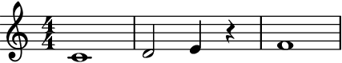
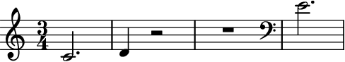
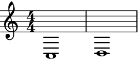

auxjad.reposition_clefs¶
-
auxjad.reposition_clefs(container: abjad.core.Container.Container, *, shift_clef_to_notes: bool = True, implicit_clef: abjad.indicators.Clef.Clef = Clef('treble'))¶ Mutates an input container (of type
abjad.Containeror child class) in place and has no return value; this function removes all consecutive repeated clefs. It can also be used to shift clefs from rests to pitched leaves.- Basic usage:
When consecutive clefs are the same, the second one is removed:
>>> staff = abjad.Staff(r"c'1 | d'1") >>> abjad.attach(abjad.Clef('treble'), staff[0]) >>> abjad.attach(abjad.Clef('treble'), staff[1]) >>> abjad.f(staff) \new Staff { \clef "treble" c'1 \clef "treble" d'1 }
>>> auxjad.reposition_clefs(staff) >>> abjad.f(staff) \new Staff { \clef "treble" c'1 d'1 }

- LilyPond’s fallback clef:
As seen above, LilyPond automatically omits repeated clefs unless the first clef is omitted. In that case, it uses a treble clef as fallback, although it won’t then remove a subsequent repeated treble clef:
>>> staff = abjad.Staff(r"c'1 | d'1") >>> abjad.attach(abjad.Clef('treble'), staff[1]) >>> abjad.f(staff) \new Staff { c'1 \clef "treble" d'1 }

This function handles fallback clefs too:
>>> auxjad.reposition_clefs(staff) >>> abjad.f(staff) \new Staff { c'1 d'1 }

- Clef structure:
The function also removes clefs that are separated by an arbitrary number of leaves without clefs:
>>> staff = abjad.Staff(r"c'1 | d'2 e'4 r4 | f'1") >>> abjad.attach(abjad.Clef('treble'), staff[4]) >>> abjad.f(staff) \new Staff { c'1 d'2 e'4 r4 \clef "treble" f'1 }
>>> auxjad.reposition_clefs(staff) >>> abjad.f(staff) \new Staff { c'1 d'2 e'4 r4 f'1 }
- Inputs with optimal clef structure:
The function will not alter the container if the clef changes are already optimal.
>>> staff = abjad.Staff(r"c'1 | a,2 bf,4 r4 | f'1") >>> abjad.attach(abjad.Clef('bass'), staff[1]) >>> abjad.attach(abjad.Clef('treble'), staff[4]) >>> abjad.f(staff) \new Staff { c'1 \clef "bass" a,2 bf,4 r4 \clef "treble" f'1 }
>>> auxjad.reposition_clefs(staff) >>> abjad.f(staff) \new Staff { c'1 \clef "bass" a,2 bf,4 r4 \clef "treble" f'1 }

- Multi-measure rests:
The function handles rests and multi-measure rests.
>>> staff = abjad.Staff(r"c'1 | d'2 r2 | R1 | e'1") >>> abjad.attach(abjad.Clef('treble'), staff[0]) >>> abjad.attach(abjad.Clef('treble'), staff[4]) >>> abjad.f(staff) \new Staff { c'1 d'2 r2 R1 \clef "treble" e'1 }
>>> auxjad.reposition_clefs(staff) >>> abjad.f(staff) \new Staff { c'1 d'2 r2 R1 e'1 }
shift_clef_to_notes:By default, clefs attached to rests are shifted to the first pitched leaf.
>>> staff = abjad.Staff(r"c'1 | d'2 r2 | fs1") >>> abjad.attach(abjad.Clef('treble'), staff[0]) >>> abjad.attach(abjad.Clef('bass'), staff[2]) >>> abjad.f(staff) \new Staff { \clef "treble" c'1 d'2 \clef "bass" r2 fs1 }
>>> auxjad.reposition_clefs(staff) >>> abjad.f(staff) \new Staff { \clef "treble" c'1 d'2 r2 \clef "bass" fs1 }
Set
shift_clef_to_notestoFalseto disable this behaviour.>>> staff = abjad.Staff(r"c'1 | d'2 r2 | fs1") >>> abjad.attach(abjad.Clef('treble'), staff[0]) >>> abjad.attach(abjad.Clef('bass'), staff[2]) >>> auxjad.reposition_clefs(staff, shift_clef_to_notes=False) >>> abjad.f(staff) \new Staff { \clef "treble" c'1 d'2 \clef "bass" r2 fs1 }

- Multiple multi-measure rests:
Clefs are shifted even if the container has multiple multi-measure rests.
>>> staff = abjad.Staff(r"\time 3/4 c'2. | d'4 r2 | R1 * 3/4 | e'2.") >>> abjad.attach(abjad.Clef('treble'), staff[0]) >>> abjad.attach(abjad.Clef('bass'), staff[2]) >>> abjad.f(staff) \new Staff { \time 3/4 \clef "treble" c'2. d'4 \clef "bass" r2 R1 * 3/4 e'2. }

>>> auxjad.reposition_clefs(staff) >>> abjad.f(staff) \new Staff { \time 3/4 \clef "treble" c'2. d'4 r2 R1 * 3/4 \clef "bass" e'2. }
- Subcontainers:
The input container can also handle subcontainers, including cases in which the clefs are attached to leaves of subcontainers:
>>> staff = abjad.Staff([abjad.Note("c'2"), ... abjad.Chord("<d' f'>2"), ... abjad.Tuplet((2, 3), "g'2 a'2 b'2"), ... ]) >>> abjad.attach(abjad.Clef('treble'), staff[2][1]) >>> abjad.f(staff) \new Staff { c'2 <d' f'>2 \times 2/3 { g'2 \clef "treble" a'2 b'2 } }
>>> auxjad.reposition_clefs(staff) >>> abjad.f(staff) \new Staff { c'2 <d' f'>2 \times 2/3 { g'2 a'2 b'2 } }
implicit_clef:By default, when the first leaf doesn’t have a clef the function assumes that the music is written in treble clef (which is the default fallback clef in LilyPond).
>>> staff = abjad.Staff(r"c'1 | d'1") >>> abjad.attach(abjad.Clef('treble'), staff[1]) >>> abjad.f(staff) \new Staff { c'1 \clef "treble" d'1 }
>>> auxjad.reposition_clefs(staff) >>> abjad.f(staff) \new Staff { c'1 d'1 }

Set the argument
implicit_clefto a differentabjad.Clefto change the implicit clef.>>> staff = abjad.Staff(r"c1 | d1") >>> abjad.attach(abjad.Clef('bass'), staff[1]) >>> abjad.f(staff) \new Staff { c1 \clef "bass" d1 }
>>> auxjad.reposition_clefs(staff, implicit_clef=abjad.Clef('bass')) >>> abjad.f(staff) \new Staff { c1 d1 }
This can be useful when extending a container that already has a specific clef.
>>> music = abjad.Staff(r"\clef bass c4 d4 e4 f4") >>> music.extend(staff) >>> abjad.f(music) \new Staff { \clef "bass" c4 d4 e4 f4 c1 d1 }
Warning
The input container must be a contiguous logical voice. When dealing with a container with multiple subcontainers (e.g. a score containings multiple staves), the best approach is to cycle through these subcontainers, applying this function to them individually.